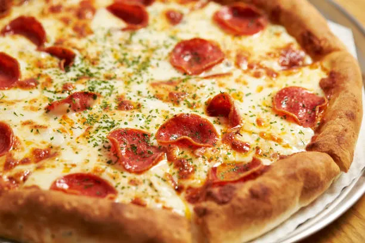

Pizza

Description
This homemade pizza recipe is easy, delicious, and endlessly customizable. With a crispy crust, tangy tomato sauce, and melted cheese, you can add your favorite toppings to make it your own!
Ingredients
- 2 ½ cups all-purpose flour
- 1 tsp sugar
- 1 tsp salt
- 1 packet (2 ¼ tsp) active dry yeast
- 1 cup warm water
- 2 tbsp olive oil
- 1 cup tomato sauce
- 1 tsp dried oregano
- 1 tsp garlic powder
- Salt and pepper to taste
Steps
- Make the dough: In a large bowl, combine warm water, yeast, and sugar. Let it sit for 5 minutes until it bubbles. Stir in flour, salt, and olive oil, and mix until a dough forms. Knead the dough on a floured surface for 5-7 minutes until smooth. Place it in a greased bowl, cover, and let it rise for 1 hour.
- Preheat your oven to 475°F (245°C).
- Prepare the sauce: Mix the tomato sauce with oregano, garlic powder, salt, and pepper in a bowl.
- Once the dough has risen, roll it out on a floured surface to your desired thickness. Place the dough on a greased baking sheet or pizza stone.
- Spread the sauce evenly over the dough. Sprinkle mozzarella cheese on top.
- Add your favorite toppings.
- Bake the pizza for 12-15 minutes, or until the crust is golden and the cheese is bubbly.
- Let it cool for a few minutes before slicing and serving.